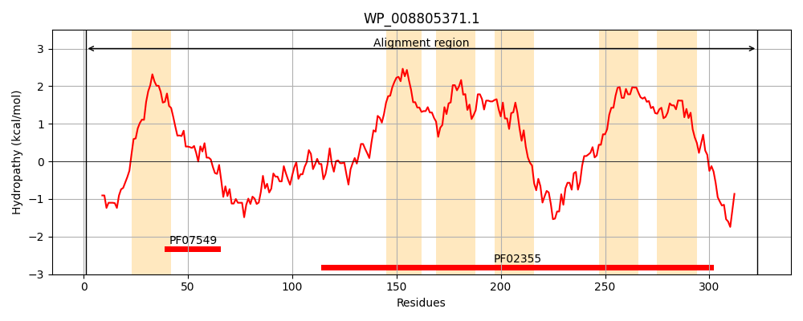
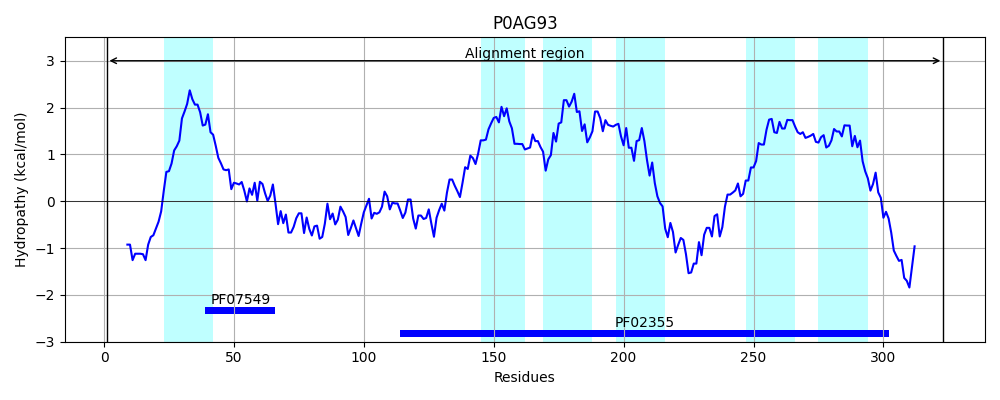
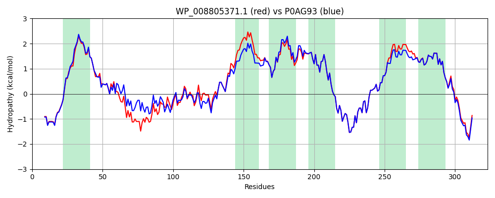

Hit Accession: P0AG93
Hit TCID: 2.A.6.4.1
Hit Description: gnl|BL_ORD_ID|8853 gnl|TC-DB|P0AG93|2.A.6.4.1 Protein translocase subunit SecF OS=Escherichia coli (strain K12) GN=secF PE=1 SV=1
Mach Len: 323
e:0.000000
Query TMS Count : 6
Hit TMS Count: 6
TMS-Overlap Score: 5.900000
Predicted Substrates:CHEBI:5584;hydron, CHEBI:8526;protein polypeptide chain
BLAST Alignment:
Score: 1462 , Bit scores: 567 bits, E-value: 0.0e+00, Alignment length: 323, Percentage identity: 89
Query: 1 MAQEYTVEQLNHGRKVWDFMRWDYWAFGISGFLLIVSIAIIGVRGFNWGLDFTGGTVIEITLEKPVDLDQMRDSLQKAGFEEPQVQNFGSSRDIMVRMPPVHDANVSQELGSKVVTVINESTSQNAAVKRIEFVGPSVGADLAQTGALALIAALVCILIYVGFRFEWRLAAGVVIALAHDVVITMGVLSLFHIEIDLTIVASLMSVIGYSLNDSIVVSDRIRENFRKIRRGTPYEIFNVSLTQTLHRTLITSGTTLMVILMLFLFGGPILEGFSLTMLIGVSIGTASSIYVASALALKLGMKREHLLQQKVEKEGADQPSILP 323
MAQEYTVEQLNHGRKV+DFMRWDYWAFGISG LLI +I I+GVRGFNWGLDFTGGTVIEITLEKP ++D MRD+LQKAGFEEP +QNFGSS DIMVRMPP Q LGS+V+ VINEST+QNAAVKRIEFVGPSVGADLAQTGA+AL+AAL+ IL+YVGFRFEWRLAAGVVIALAHDV+IT+G+LSLFHIEIDLTIVASLMSVIGYSLNDSIVVSDRIRENFRKIRRGTPYEIFNVSLTQTLHRTLITSGTTLMVILML+LFGGP+LEGFSLTMLIGVSIGTASSIYVASALALKLGMKREH+LQQKVEKEGADQPSILP
Sbjct: 1 MAQEYTVEQLNHGRKVYDFMRWDYWAFGISGLLLIAAIVIMGVRGFNWGLDFTGGTVIEITLEKPAEIDVMRDALQKAGFEEPMLQNFGSSHDIMVRMPPAEGETGGQVLGSQVLKVINESTNQNAAVKRIEFVGPSVGADLAQTGAMALMAALLSILVYVGFRFEWRLAAGVVIALAHDVIITLGILSLFHIEIDLTIVASLMSVIGYSLNDSIVVSDRIRENFRKIRRGTPYEIFNVSLTQTLHRTLITSGTTLMVILMLYLFGGPVLEGFSLTMLIGVSIGTASSIYVASALALKLGMKREHMLQQKVEKEGADQPSILP 323 | Protein Hydropathy Plots: |
|---|
|  |  |
Pairwise Alignment-Hydropathy Plot:
|
|---|
|  |